01 / GRASSLAND FOREST · LITEPAPER
A world to make your own
Grassland Forest brings farming life, RPG exploration and pet battles into a pixel-art world connected to Web3. Your adventure grows through small decisions: what to plant, when to upgrade a tool, where to fish and how to prepare your companion for a fight.
Live in the forest
Care for your character, meet the villagers and explore the town, island and depths of the mine.
Build your progress
Farm, fish, chop trees and turn resources into useful items. Experience and skills support different ways to play.
Play with others
Share messages, make friends and control your pet in arenas where aiming and decisions matter.
A harvest to begin. A companion to explore with. A world to return to.
On the map, you can fight monsters and wild animals with your pet in attack or defense mode, or face them yourself with your character’s sword. Weather, a day–night cycle, wildlife, tools and inventory accompany exploration and real-time combat.
02 / GRASSLAND FOREST · LITEPAPER
Your first steps into the forest
Choose a device, sign in with your account and follow the tutorial. An Internet connection lets you load your save, chat and confirm actions that contribute to your progress.
Android
APK availableAndroid 8 or later. The client opens the game through a compatible browser installed on the phone or emulator.
Windows
Client availableWindows 10 or later, 64-bit. The launcher lets you use the browser where you manage your account.
Linux
Client availableNative package for Linux x64. Extract the archive and run the client; it needs access to the game’s services.
macOS
Source build kitSource kit for Intel and Apple Silicon, to build on macOS 13 or later. You can also play through a browser.
Web version: access through compatible desktop and mobile browsers. On iPhone and iPad, browser access is the route covered here; this edition does not present a native iOS app.
- Sign in
Use the sign-in options offered by the game portal. If you use MetaMask, connect the same account you will use for your save and confirm the authentication message.
- Link your client
In a desktop or Android client, open the saved-session check. If linking is required, follow the authentication page, check that the six-digit code matches and approve the link. Return to the game once it is confirmed.
- Meet Lord Digby
When you appear in town, follow the tutorial prompts. Learn to select items, interact with plots and talk to NPCs before entering combat areas.
- Prepare a short trip
Check water and food, backpack space and a useful tool. Start with a crop, an ore vein or a visit to the river.
03 / GRASSLAND FOREST · LITEPAPER
Every button, in its place
The HUD is your travel dashboard. The top-left corner shows your character, level and health, water and food bars. At the top right are the world time, GL/SL balances and the eye button for hiding or showing the interface.
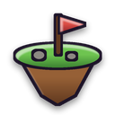
Travel to the island. The icon changes there to return to town.
Lands / BackName, avatar, language, graphics and account options.
DashboardRead system notices and messages; the badge indicates new entries.
MailRequests, your friends list and private conversations.
FriendsAdjust music and effects, test the volume or mute each channel.
MusicReview recorded interactions and items, and refresh the list.
Transactions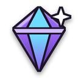
Choose your Soulbound appearance and read the configured collection’s NFTs.
NFT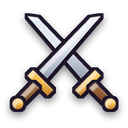
Review your progress and allocate points to character attributes.
Skills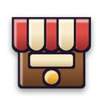
Open the catalog to buy tools, seeds, food and construction items.
StoreHide the HUD to enjoy the scenery; restore it when you need your shortcuts.
HideOpen your items and organize the bottom quick-slot bar.
Inventory / IOpen general chat. The translation globe is inside the panel.
Chat / 🌐World controls
| Action | PC | Phone |
|---|---|---|
| Move | WASD or arrow keys; you can also select a destination on the map. | Touch joystick and taps on the map. |
| Interact | Click a plot, NPC, object or resource. | Tap the world element. |
| Inventory | I or the backpack button. | Backpack button; tap the item you want to use. |
| Equipped sword | Space · abilities V B N. | Attack button and three ability buttons. |
| Fishing | Hold and release F; during the fight, F or Space. | “Fish” button; hold/release during the minigame. |
04 / GRASSLAND FOREST · LITEPAPER
One forest, many paths
Each place has a role in your adventure. Your account’s inventory travels between scenes; what you bring determines whether the trip focuses on farming, gathering or combat.
| Place | What you do | How to enter |
|---|---|---|
| Town · GameScene | Tutorial, garden, NPCs, river, resources, missions and entrances to other areas. | Starting point for your save and return point from Lands. |
| Shop interior · tiendajuego | Visit the shop interior and open Johnny Johnson’s catalog. | Use the shop entrance in town. |
| Mine · MinaScene | Extract minerals, fight enemies and explore passages and stairs. | Town mine entrance; use the map return to leave. |
| Island · LandsScene | Place plots and objects, farm, store materials and fish near water. | Round “Lands” button; the same button lets you return. |
| Wilderness · SalvajeScene | Explore the forest map in this development version. | Wilderness route or entrance when enabled by the build. |
| Arena · BattleScene | Control your pet in a fight separate from the world map. | Enter the town battle area and choose a mode. |
Villagers with a purpose
Lord Digby guides the tutorial. Farmer Joe opens farming missions. Johnny Johnson runs the shop. Alchemist Colin offers potions. The blacksmith and furnace help prepare tools and materials. Approach and select the relevant NPC or interaction point.
Rain, snow, nighttime lighting and wildlife change how your journey looks. Adjust graphics quality and view distance in your profile to suit your device.
05 / GRASSLAND FOREST · LITEPAPER
Buy, organize and prepare
A useful purchase starts with a goal. Will you plant, fish, upgrade equipment or build in Lands? Open “Store” and use Seeds, Tools, Food, Equipment and Construction to find what you need.
- Choose a product
Search by name or category and select its card. On PC, press “Interact” to open the item sheet; on mobile, it opens when you tap the item. Read price, required level, uses and limits.
- Set the quantity
Use + and − in the purchase panel. Check the total and make sure you have enough balance and room to receive the item.
- Confirm and wait
Press the purchase action. Let the operation confirm before repeating it; the history helps you review what was processed.
- Check your backpack
Open “Inventory” and find the item. Move it to a quick slot and select it when you want to use it in the world.
Sell and keep what you need
The operation selector also lets you sell eligible items. Compare what you receive and keep tools, food and seeds for your next trip. Purchase limits and requirements are item-specific; always check the item details.
06 / GRASSLAND FOREST · LITEPAPER
From seed to harvest
Farming combines preparation, care and time. Choose an empty garden plot or a plot placed in Lands; each crop moves through planting, watering, growth and harvest.
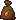
Carrot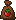
Tomato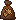
Wheat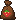
StrawberrySelect seeds and mark empty plots.
Select a watering can or water bucket and mark crops.
Allow growth, check the crop state and protect it.
Use shears on ready crops and confirm the batch.
- Prepare your seeds
Buy seeds, check quantities and select a bag in your quick bar. Planting uses one unit per marked plot.
- Mark and confirm
Select empty plots. A second tap removes a plot from the selection. Use ✔ to confirm the batch or ✖ to cancel. Work with one seed type per batch.
- Add water
Select “Watering Can” or a water bucket. Mark crops that need water and confirm with ✔. Fill an empty bucket at an enabled water point.
- Harvest when ready
Check the plot’s state. When the crop is mature, select “Shears”, mark the harvest and confirm; received produce appears in your inventory.
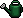
Watering can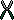
Shears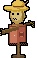
Scarecrow07 / GRASSLAND FOREST · LITEPAPER
Chop, mine and transform
Resources connect exploration to upgrades. Wood, stone and ores help you prepare materials and tools; choosing the right equipment turns a short walk into a productive trip.
How to chop trees
- Bring an axe
Select an axe from your inventory. Approach an interactive tree and select it.
- Complete the hits
Follow the tree’s chopping progress. Tool quality and resource requirements influence the task.
- Collect and reserve
When finished, check the wood you received. The tree temporarily enters regrowth; gather another resource while it recovers.
How to mine
- Bring a pickaxe
Buy or craft a pickaxe and select it. Find an interactive vein in the world or inside the mine.
- Approach the vein
Select the ore from a valid distance and repeat at the allowed pace. Check the tool’s uses and level.
- Check the extraction
Wait for the result and check your inventory. Depleted veins need to regenerate; the resource message guides you.
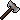
Axe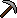
PickaxeFurnace, blacksmith and recipes
The Furnace transforms the materials supported by its recipe. Add the required ingredients and fuel, check the quantity and press Smelt. Collect the result when processing is complete. In the crafting panel, check each tool’s recipe: materials, quantity and requirements are shown before you confirm.
08 / GRASSLAND FOREST · LITEPAPER
The river has stories, too
Fishing takes attention and rhythm. You need a rod in your inventory and a valid shoreline in town or Lands. The “Fish” button appears when you can cast.
- Charge your cast
On PC, hold F; on a phone, hold “Fish”. The bar above the character shows power and a marker shows where the float will land. Release to cast.
- Wait for a bite
Watch the float. A bite produces splashes and a “!” sign. Press F or the button to hook the fish in time.
- Follow the fish
In the vertical panel, holding Space, F, the mouse or your finger raises the hook; releasing lowers it. Keep it inside the fish’s box.
- Finish the catch
Progress increases when the hook overlaps the fish and falls when you move away. Fill the bar to receive the catch; empty it and the fish escapes.
09 / GRASSLAND FOREST · LITEPAPER
Your space in Lands
Lands is the island where you can organize your farming activity. Enter through the round plot button, place items through “Build” and return to town through the same shortcut when you are done.
- Buy the items you will place
The shop’s “Construction” category contains plots and supported objects. Bring a construction shovel if you want to reorganize your space.
- Open Build
In Lands, select “Build” and choose an object type. The panel shows how many you have available.
- Choose a valid location
Place the item on allowed terrain without blocking water, paths or existing objects. Follow the preview and confirm using the displayed control.
- Farm and store
Plots use the same seed, water and shears sequence as the garden. Chests separate stored materials from your backpack; use “Shovel” to remove eligible objects.
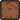
Plot| Object | Purpose |
|---|---|
| Plot | Creates a crop space within the island. |
| Scarecrow | Protects crops within its coverage area. |
| Chests | Store items; capacity depends on the chest model. |
| Construction shovel | Lets you retrieve placed elements under the system’s conditions. |
You can also fish from valid island shores. Your backpack, chat, skills and HUD shortcuts remain with your character.
10 / GRASSLAND FOREST · LITEPAPER
Grow your own way to play
Activity experience and chosen upgrades work together. “Skills” brings together profession levels and the points you can allocate to your character. Gaining a level adds a point to specialize your playstyle.
| Attribute | Effect on your adventure |
|---|---|
| Strength | Increases sword damage. |
| Defense | Reduces incoming damage. |
| Wisdom | Reduces sword-ability cooldowns. |
| Patience | Helps you maintain steadier control while fishing. |
| Farming | Reduces the cost of farming actions that use this attribute. |
| Woodcutting | Reduces the cost of chopping actions. |
| Fishing | Widens the target tolerance in the fishing minigame. |
| Combat | Improves sword reach. |
- Check your points
Open “Skills” and read “Character points”. The number shows what you can allocate.
- Choose a specialization
Press +1 beside the attribute you want to improve. Wait for confirmation and check the new value.
- Combine gear and skills
A fisher can prioritize patience and fishing; a mine explorer, defense and strength; a farmer, farming and woodcutting.
Statistics, requirements and reputation
The statistics book helps compare your capabilities with resource and tool requirements. Activities develop professions such as farming, mining, woodcutting, fishing and cooking. Missions and NPC relationships add goals to that progress; check the reputation and tasks enabled in your build.
11 / GRASSLAND FOREST · LITEPAPER
A companion with personality
Your pet has its own name, health and level. It accompanies you through the world and becomes the character you control in the arena. Keeping it ready is part of your strategy.
- Open its menu
Double-click the pet on PC, or tap it twice on a phone.
- Choose a mode
Choose attack or defense for your pet before approaching monsters or wild animals on the map. In the current interface, select “Attack” to attack; the defense option is labeled “Passive” and keeps the pet from initiating attacks.
- Care for its health
Check the bar before battle. The alchemist offers products to heal or revive it when needed.
Fight alongside your pet
You can also equip a sword and fight with your character. Approach from a safe position, face the monster or wild animal and use the available attacks and abilities. Your pet keeps its own health and level.
12 / GRASSLAND FOREST · LITEPAPER
The mine rewards preparation
Inside the mine, watch before you attack. Passages, enemies and ability cues make distance and movement part of combat. Bring a sword, food and suitable potions.
- Equip a sword
Buy a wooden, copper or iron sword. Use the selector beside the backpack and choose a sword in your inventory.
- Attack toward the enemy
Face your target and press Space, or tap the attack button on mobile. The swing acts in front of your character.
- Read the response
The displayed number shows the damage dealt. The hit’s small knockback helps create space for your next move.
- Use the right ability
Combine a normal hit with whirlwind, thrust or guard. Each ability has a cooldown; saving one for a retreat can be decisive.
| Ability | PC | Purpose |
|---|---|---|
| Whirlwind | V | A wide strike for nearby threats around your position. |
| Piercing thrust | B | A longer, focused forward attack. |
| Guard | N | Brief protection that reduces damage while you reposition. |
Enemies of the depths
- Serpent: watch for charges, fire threats and area attacks; reposition when the cue appears.
- Zombies: apply close-range pressure; manage space and avoid being surrounded.
- Ghosts: require tracking movement and keeping room to respond.
- Hostile mages: watch projectiles and marks before approaching.
13 / GRASSLAND FOREST · LITEPAPER
In the arena, you are your pet
The arena plays in real time: move your pet, aim, attack, collect upgrades and survive the closing fog. The last fighter standing wins. Positioning, ammunition and cover can change a match.
| Mode | How it works |
|---|---|
| Daily challenge | A sequence of five encounters against animals: rabbit, boar, crow, fox and crocodile. Check available rounds in the menu. |
| PvP arena | A room of up to six fighters in a free-for-all. Matchmaking lasts up to 2 minutes and 30 seconds; remaining places are filled with bots when it ends. |
| Practice | You against three bots, with no ranking points. Learn movement, aiming, super attacks and the map. |
| Leaderboard | Check position, season and the participation requirements shown in the panel. |
- Enter and choose
Approach the town battle area, open the menu and select a mode. Check your pet’s health first.
- Watch the room
In PvP, wait for opponents and follow the matchmaking countdown. Remaining spaces are filled with bots when required; you can cancel from the room.
- Play the match
After the opening countdown, move, aim and collect advantages. Watch health, ammunition, super charge and remaining fighters.
- Return with the result
After being knocked out you can keep watching. At the end, review the result and use “Back to map” or “Play again”. Surrender asks for a second confirmation.
Battle controls
| Action | Computer | Phone |
|---|---|---|
| Move | WASD or arrow keys. | Movement joystick on the left. |
| Aim and attack | Aim with the mouse and click; Space uses auto-aim. | Drag the attack control on the right to aim; a tap supports assisted firing. |
| Super | With a full charge, press E or right-click; Q is also supported. | Star button; aim the super with the touch control. |
Crates, powers and terrain
Break crates to collect advantages. Power bones increase health and damage during the match. Meat restores health. Barrels explode when broken: use them against opponents, but the blast also hits anyone nearby.
Absorbs damage while active.
Helps you escape or reposition.
Restores charges to sustain pressure.
Brings your next special attack closer.
Tall grass provides concealment, although attacking or taking damage can reveal your position. Walls provide cover. Retreating for a few seconds without attacking or being hit enables arena regeneration. Bots also seek resources, use cover and retreat when hurt.
14 / GRASSLAND FOREST · LITEPAPER
A forest that speaks two languages
Chat helps coordinate a fishing trip, discuss a battle or meet new friends. You can translate messages between English and Spanish while keeping the original text, in both general chat and private conversations.
- Open chat
Select the conversation button in the bottom-left corner. Type in the field and use “Send” to send.
- Select the globe
The 🌐 button cycles with each press: off → Spanish → English → off. The small ES or EN marker indicates the target language.
- Read both texts
The original remains visible and its translation appears below. If a message is already in the selected language, it does not need another translation line.
- Use it in private chat
Open “Friends”, enter a conversation and select the globe in its header. The setting is shared across both chats and remembered in that browser.
Friends and communication
In “Friends”, check who is online, send or accept requests and open conversations. Badges help you find pending requests or messages. General chat also supports emojis and reactions; mail collects system communications.
15 / GRASSLAND FOREST · LITEPAPER
Prepare for the return journey
Health, water and food are adventure resources. Replenishing them before entering the mine or wilderness lets you stay in the world longer and recover from fights.
Health
Measures what you can withstand. Damage, potions and recovery change its value.
Water
Stay hydrated using supported items and water points.
Food
Bring food from the catalog or your activities and use items that are suitable to consume.
The alchemist
Select Alchemist Colin or his interaction point in town. His catalog offers products for your character and pet. Check each bottle’s target before purchasing.
| Product | When to use it |
|---|---|
| Health Potion | To restore character health when injured. |
| Antidote | To clear character poisoning. |
| Pet healing | To restore companion health; use the controls in its menu or at the alchemist. |
| Pet elixir | To revive your pet when needed. |
- Buy the potion
Open the alchemist’s catalog and confirm the item and price. Wait for the bottle to appear in your inventory.
- Select and use
For character health or antidote, select the potion in your inventory and select your character. Check confirmation and the status bar.
Missions: a purpose for each trip
Talk to Farmer Joe and other NPCs with available tasks. Read requirements, prepare the requested items, check the reward and deliver when the mission allows. Tutorial objectives and missions give context to what you grow, gather or upgrade.
16 / GRASSLAND FOREST · LITEPAPER
An economy that starts with play
Utility begins with world activities: seeds start a farming cycle, tools enable resource gathering and upgrades prepare new expeditions. Web3 adds a layer of account-linked records and assets so that progress can be checked.
Buy seeds, tools and supplies.
Farm, explore, mine, fish or fight.
Receive confirmed resources and experience.
Use, store, transform or sell eligible items.
| Element | What it represents | Where you see it |
|---|---|---|
| GL · Gold | Game balance for operations that accept it. | HUD and transaction details. |
| SL · Silver | Game balance used by many items and services. | HUD, shop, alchemist and service panels. |
| Items and resources | Units of seeds, tools, produce, ores and other inventory items. | Backpack, quick slots, chests and records. |
| NFT | Collection token with its own metadata and usage rules. | NFT panel and collection details. |
| zkLTC | Native currency for LitVM gas; test units on LiteForge. | Wallet and network explorer. |
What happens when you confirm an action
Choose the item, quantity and action.
The service checks account, rules and availability.
The change and associated chain record are processed when applicable.
The interface receives the result and syncs inventory or progress.
Movement, effects and rendering happen in the client. Game services coordinate sessions, the world and battles; blockchain-connected contracts and records retain the operations the system publishes. This combination supports responsive play and verifiable records for the parts that use Web3.
“Transactions” is the place to review recorded interactions and items. A submitted operation may still be pending: its confirmed result is what should appear in inventory or progress.
Sustainability through utility
The economic outlook prioritizes recurring uses: planted seeds, tools that wear down, transformed resources and recovery services. A future project treasury should publish its rules, inflows, spending and goals before being presented as an operational part of the economy.
LitVM gas and native currency: Official LitVM FAQ.
17 / GRASSLAND FOREST · LITEPAPER
Web3 roots in LitVM
Grassland Forest uses the LitVM LiteForge configuration in this edition. For players, the network is the layer where Web3 operations are checked and confirmed; the adventure remains a world to explore, care for and share.
LitVM LiteForge
Official documentation presents LitVM as an EVM-compatible rollup for the Litecoin ecosystem. That programmable-contract layer is the project’s Layer 2 — L2 — proposition. LiteForge is the currently published test network.
Sources: LitVM Docs · LitVM · Network parameters.
How the network is designed
The described architecture combines Arbitrum Orbit/Nitro for EVM execution, Succinct SP1 for proofs, BitcoinOS Grail for the LTC connection and Espresso for sequencing. The rollout plan begins with Ethereum settlement and later proposes proof anchoring and native settlement on Litecoin.
Architecture and phases according to official technical documentation. These phases describe the network’s plan; they do not establish that every component is deployed on LiteForge.
How to identify LiteForge
| Field | Value |
|---|---|
| Network | LitVM LiteForge |
| Chain ID | 4441 · 0x1159 |
| Gas | zkLTC |
| HTTP RPC | liteforge.rpc.caldera.xyz/http |
| Explorer | liteforge.explorer.caldera.xyz |
Parameters checked on 11 October 2026 in Add to Your Wallet · LitVM Docs.
- Open the official hub
Visit testnet.litvm.com and select “Add to Wallet”.
- Check the network
Verify LiteForge, Chain ID 4441 and zkLTC before accepting.
- Check your records
Use “Transactions” and the explorer for operations with a transaction identifier.
18 / GRASSLAND FOREST · LITEPAPER
2025–2026 Roadmap
The project roadmap organizes development into four quarters. This edition preserves the tasks and statuses published on GitBook, checked on 16 October 2026: Q4 2025, Q1 2026 and Q2 2026 are marked complete; Q3 2026 retains its pending tasks.
- Complete in the published roadmap
Q4 2025
- ☑ Whitepaper development
- ☑ Social media community development.
- ☑ Project website development
- ☑ Development of new features and DApp bug fixes.
- ☑ Website publication.
- ☑ Whitepaper publication
- ☑ Organization and launch of Playtest 1
- ☑ In-depth research and DApp bug fixes.
- Complete in the published roadmap
Q1 2026
- ☑ Organization and launch of Playtest 2
- ☑ In-depth research and DApp bug fixes.
- ☑ Gameplay optimization, integration of new features and graphical improvements
- ☑ Migration to fully onchain
- ☑ Internal stability and economy testing.
- Complete in the published roadmap
Q2 2026
- ☑ Stability research and bug fixes
- ☑ Integration of advanced tools
- ☑ Website update
- ☑ Update of core components
- ☑ Expansion of the project economy
- Pending in the published roadmap
Q3 2026
- ☐ Organization and launch of Playtest 3
- ☐ Final stability research and bug fixes
- ☐ Start of pre-registration
- ☐ CBT 1 (Closed Beta Test 1)
- ☐ Bug fixes and general improvements
Source and statuses: Grassland Forest · Roadmap 2025–2026 ↗.
For players
More playstyles, connected activities and a clear guide to how each decision affects your character.
For the ecosystem
EVM integrations and collections with public rules that can bring new experiences to the world.
For the community
Testing, suggestions and events that improve the game through real player experiences.
Game files identify Jean Larreal with project development and publication. Official announcements are the place to find current contributors, events, upcoming builds and participation conditions.
19 / GRASSLAND FOREST · LITEPAPER
Before you begin
What should I buy first?
Choose an activity. For the garden: seeds, watering equipment and shears. For resources: an axe or pickaxe. For fishing: a rod. For the mine: a sword and supplies. Check each item’s requirements.
How do I check what I bought?
Check inventory after confirmation and review “Transactions” or the shop history. Use the same account across every map.
Why is my crop not ready?
Select the plot to check its state. It may need water or growing time. Select the appropriate tool and confirm marked batches with ✔.
Why is Fish not showing?
Check that you have a rod and are at a valid shoreline, facing the water. Approach the river or supported Lands shores.
Does PvP wait indefinitely?
Matchmaking has a 2-minute-30-second limit. When it ends, the system fills remaining room spaces with bots.
How can I learn without ranking points?
Choose “Practice” in the battle menu. Learn movement, firing, super attacks and safe-zone movement against three bots.
Does translation change the sent message?
It keeps the original and adds a translation for the reader who enables the mode. The globe cycles between off, Spanish and English; private chat shares the setting.
How do I adapt graphics to my phone?
Open profile options and adjust quality and view distance. In battles, landscape orientation gives touch controls more space.
Are GL, SL and zkLTC the same?
GL and SL are game balances. zkLTC is used for LitVM gas; LiteForge uses test units. The economy chapter explains their roles.
20 / GRASSLAND FOREST · LITEPAPER
Sources and edition notes
This edition brings together the vision from both original litepapers, features reviewed in the project and primary LitVM documentation. Gameplay instructions were written from the current scenes and modules, with screenshots captured in an isolated test environment.
- Grassland Forest · Original Spanish litepaper ↗Project documentation: vision, statistics, links and preview.
- Grassland Forest · Original English litepaper ↗Nine pages reviewed; their content is aligned with this bilingual edition.
- Grassland Forest · 2025–2026 Roadmap ↗Phases, tasks and statuses reproduced from the published roadmap; checked on 16 October 2026.
- LitVM Docs · Welcome ↗Official definition of the rollup and ecosystem.
- LitVM Docs · Architecture ↗Technical components and rollout phases toward Litecoin.
- LitVM Docs · Add to Your Wallet ↗Verified LiteForge parameters and testnet/mainnet status.
- LitVM Docs · FAQ ↗Gas currency, test network and launch status.
- LitVM · Official website ↗Public reference for the LitVM ecosystem.
Editorial approach
The game description covers pets, monsters and wild animals on the map: choose attack or defense for your pet and fight with your character’s sword. The network matches the reviewed project’s LitVM configuration, and the arena guide describes real-time combat. The roadmap preserves the statuses published in its source without claiming additional progress.
Game and universe images come from the project. Updated screenshots of exploration, planting, gathering, fishing, skills and enemies use project test data. The cover is a universe illustration.
Edition: 16 October 2026 · Languages: Spanish and English · Independent document.